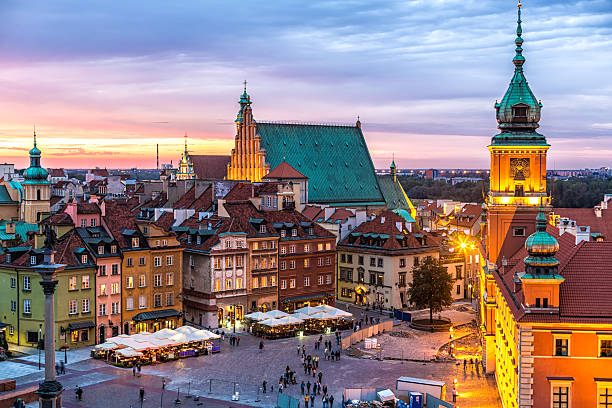
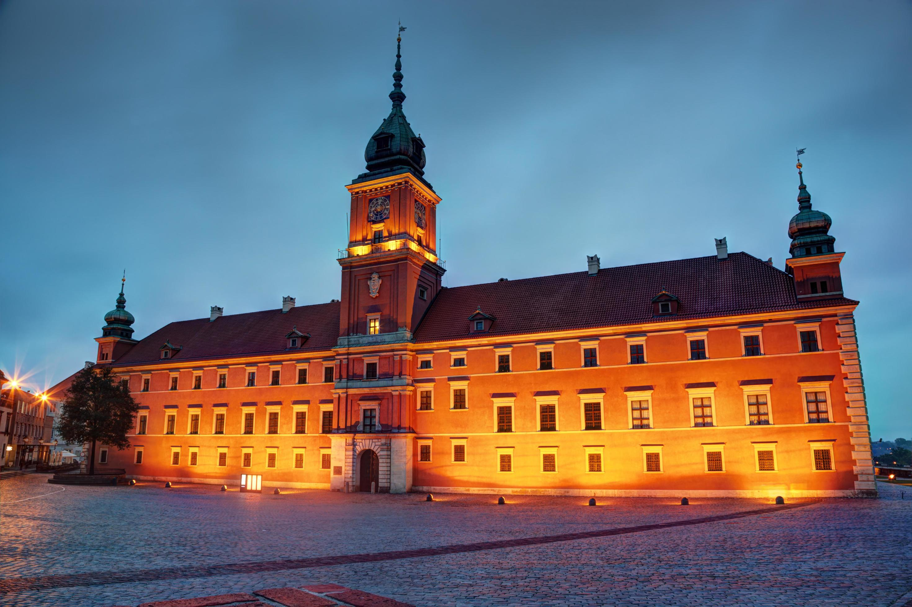
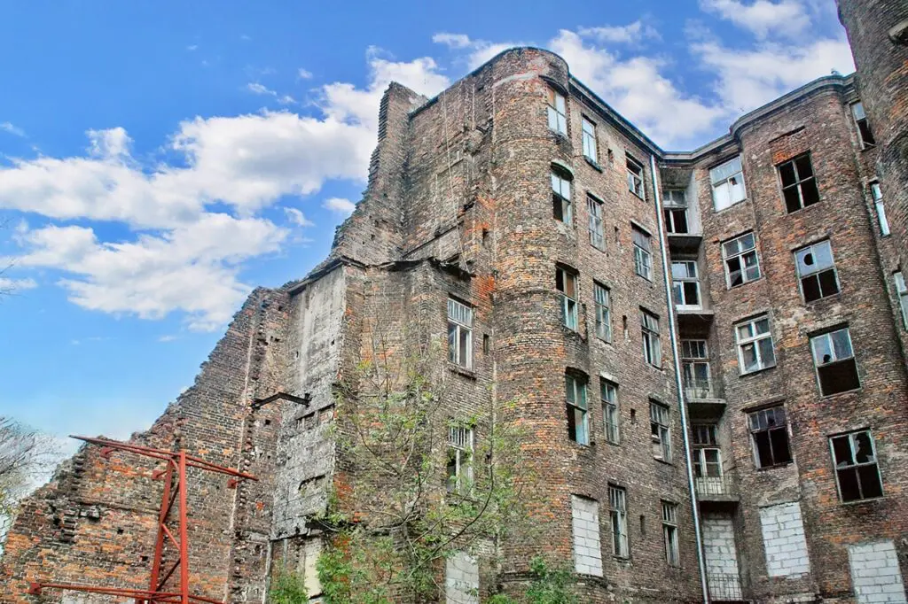
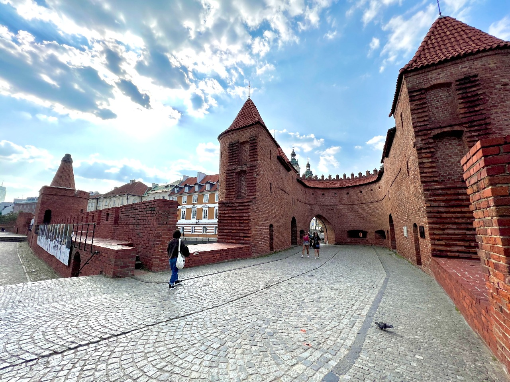

sua próxima viagem:
Conheça Varsóvia
Varsóvia é um importante destino histórico do Leste Europeu. Veja o que conhecer em uma viagem na capital da Polônia!, Varsóvia, a capital da Polônia, é uma cidade que merece estar no topo da sua lista de destinos no Leste Europeu.Com uma rica história, uma cena cultural vibrante e uma arquitetura imponente, a cidade oferece experiências únicas aos viajantes.
Três pontos turisticos que você deve conhecer em Varsóvia
1. Castelo Real de Varsóvia
Localizado no coração do centro histórico, o Castelo Real de Varsóvia é um símbolo da riqueza e poder. Restaurado na década de 70, após os danos sofridos durante a segunda guerra, foi reaberto ao público em 1984. Eleito como Patrimônio Mundial da UNESCO, o local impressiona por sua reconstrução. Afinal, foi praticamente destruído pelos bombardeiros que atingiram a cidade.
2. Gueto de Varsóvia
Em Outubro de 1940, autoridades alemãs decretaram a criação de um gueto em Varsóvia. O decreto exigia que todos os residentes judeus se mudassem para uma área, que foi isolada do resto da cidade. Ali, viveram e morreram milhares de pessoas. O Gueto de Varsóvia abrigou o que acreditam ter sido a maior concentração de judeus da Segunda Guerra Mundial. Hoje, o que restou do local, além de outros pontos da região, podem ser visitados. Para alertar as futuras gerações sobre as atrocidades da guerra.
3. Muralha de Varsóvia
A Muralha de Varsóvia é um dos poucos vestígios remanescentes das antigas fortificações medievais que cercavam a cidade. Originalmente construída no século XIV, durante o reinado do rei Casimiro III, a muralha tinha como objetivo proteger Varsóvia de ataques externos. A cidade passou por expansões e reformas, e grande parte da muralha original foi demolida para dar lugar ao desenvolvimento urbano. Hoje, apenas algumas partes da construção sobreviveram e podem ser vistas.
